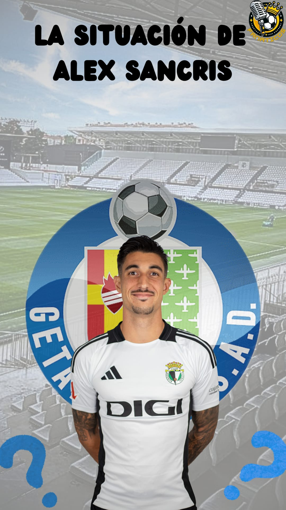

El extremo madrileño está siendo uno de los grandes protagonistas del mercado invernal burgalés por la gran incógnita que genera su futuro.
Parece ser que el Getafe apuesta por su fichaje ya sea ahora o en verano cuando finalice contrato con el conjunto blanquinegro. Según informan varios medios, el Getafe ya habría firmado un precontrato con el jugador para la temporada 25/26.
Es aquí donde se abre un gran dilema en la directiva del Burgos ya que Sancris es uno de los jugadores más importantes de la plantilla si no es el que más.
La situación del jugador se puede resolver de hasta tres formas diferentes:
La primera, que se vaya en este mercado invernal dejando una cantidad en torno a los 500k euros que vendría muy bien a la situación económica del club. Por el contrario, sería una baja muy importante que puede repercutir de forma muy negativa en el ámbito deportivo. Hay que recordar que el BCF se encuentra en la zona baja de la clasificación peleando por la salvación.
Uno de los problemas por los que el Burgos está hoy en esta situación impensable a principio de temporada cuando se pensaba en el play off, son las pocas ocasiones de peligro que genera el equipo a lo largo del encuentro, lo que se traduce en pocos goles.
Alex es de los pocos que genera acciones peligrosas, por lo que sin él, el conjunto burgalés va a sufrir más de la cuenta. Su retención en este mercado invernal es clave para la salvación.
La segunda opción, la más probable, es que se marche libre a final de temporada rumbo al Getafe sin dejar dinero en las arcas del club. Creo que esta opción sería la mejor para ambos ya que el club le exprimiría al máximo a nivel deportivo y el jugador estaría frente a una oportunidad de oro. Sancris nunca ha estado en primera división, de hecho hace cinco años trabajaba de mecánico. Esto unido a que él es de Getafe parece indicar que su futuro está más lejos que cerca del BCF.
La tercera opción, es que al final renueve y se quede en el conjunto castellano, lo cual es muy improbable, pero esto es fútbol y todo puede pasar. El año pasado el club vivió una situación similar con Curro Sánchez quien supuestamente tenía acuerdos firmados con varios clubes. Todo el mundo daba por hecho su salida y al final se quedó.
Yo entiendo perfectamente que esté pretendido por equipos de primera división porque es un jugador espectacular con muchísima proyección.
Entre sus características destaca la verticalidad, el regate, calidad, toma de decisiones...
Pero lo más importante y lo que le hace especial es su determinación, ya que siempre que pasa el balón por sus pies pasan cosas.
LA ESPERANZA ES LO ÚLTIMO QUE SE PIERDE, POR ELLO CONFÍO EN QUE SANCRIS ALARGUE SU ETAPA COMO BLANQUINEGRO MUCHOS AÑOS MÁS.